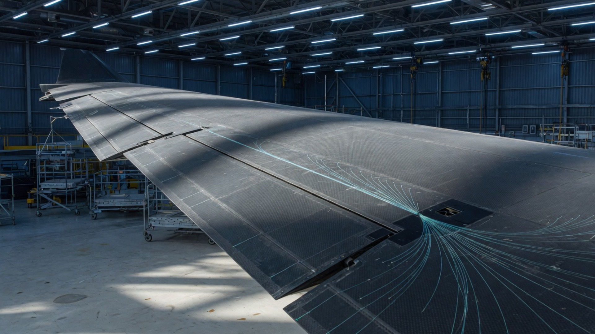

Towers & foundations
Base strain and settlement for onshore and offshore support structures.
We start with wind turbine blades — the structure we instrumented end to end — and apply the same measurement chain to civil, rail, and aerospace composites.
The most critical damage starts inside the blade. BraggSense fibres run along spar caps, leading and trailing edges, and both shear-web faces. Operators see flapwise force, root bending moment, spanwise strain fingerprints, and estimated twist — on every blade of the rotor.


Quasi-distributed FBG arrays give strain, crack opening, and temperature along decks, pylons, and linings. Install on ageing structures from the surface, or embed at pour so you start from a true zero-stress state.
Fibre is already along the corridor. FBG sensing adds load, temperature, and vibration insight without copper in the ballast. Immune to traction EMI and lightning.


Weight is the enemy. A fibre replaces a loom of gauges. Embed during layup for flight-test loads, impact detection, and certification programmes.
The same intrinsic safety that protects a blade root protects a hydrogen line. No spark at the sensor. Temperature and strain over long hauls.
Base strain and settlement for onshore and offshore support structures.
Hot-spot temperature in transformers and cables where electronics cannot sit.
Leak, third-party interference, and tank strain in explosive atmospheres.
We map fibre routes, FBG count, and interrogator class to the failure modes you actually worry about.